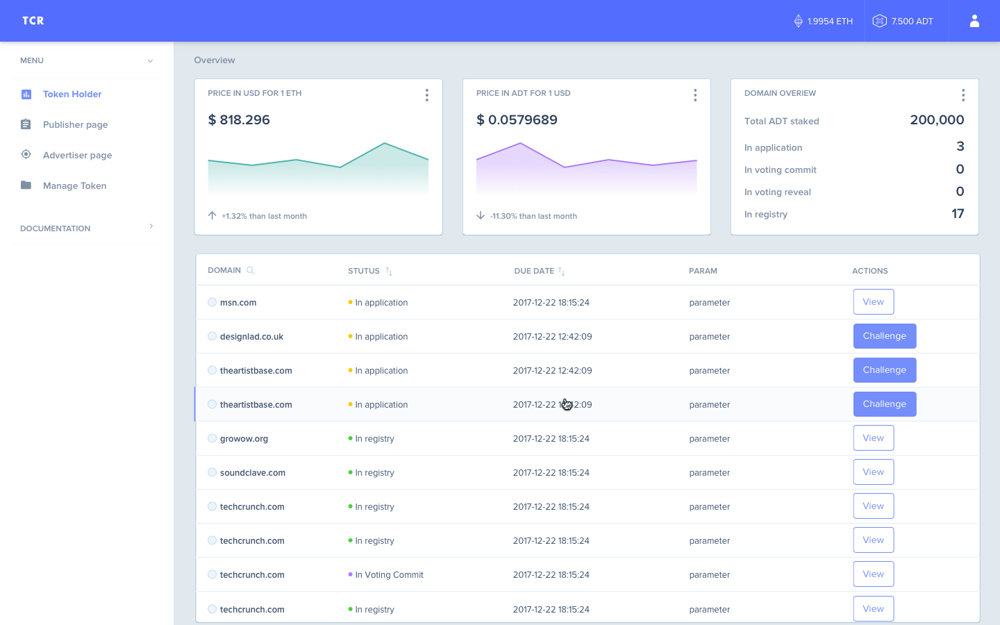
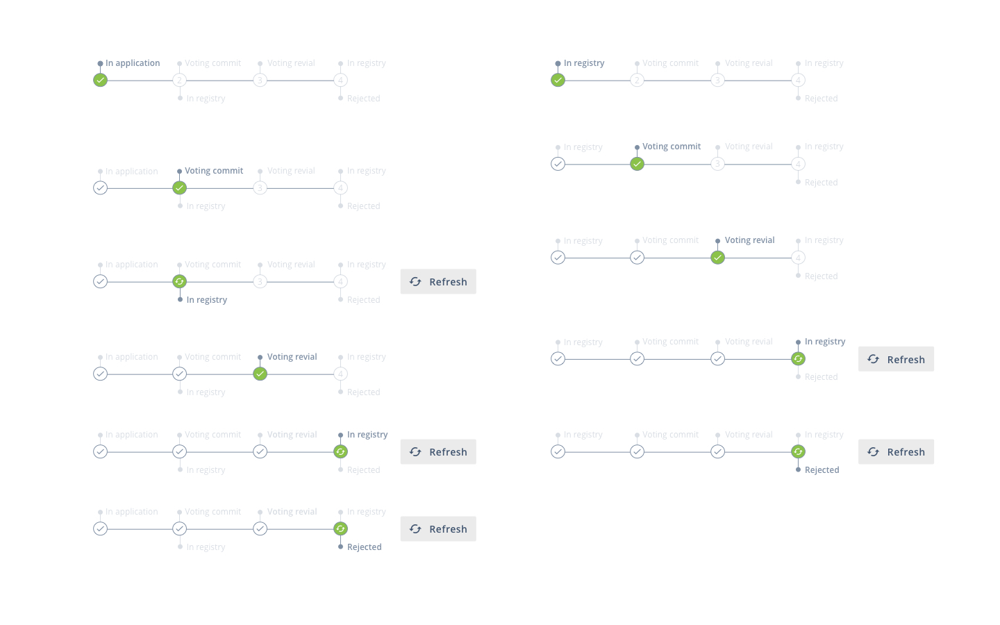
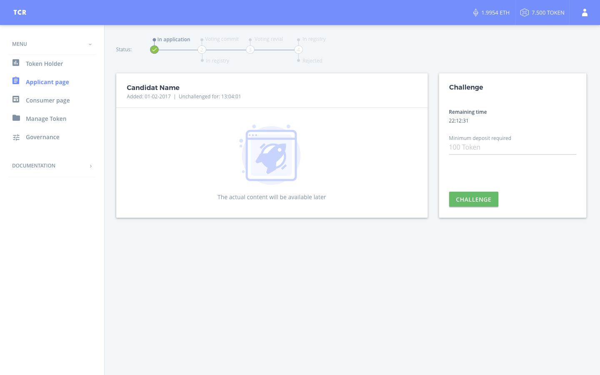
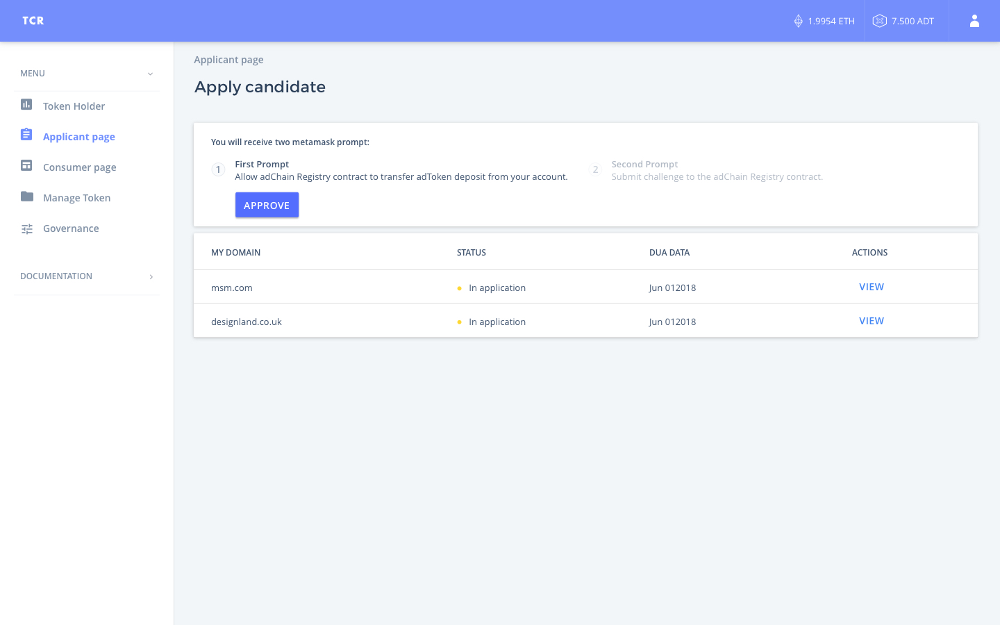

TCR — a token-curated registry. It is a UI/UX framework on top of the TCR smart contracts written by Mike Goldin, the creator of the TCR Paper. In cooperation with ConsenSys we created our solution for the curation markets ecosystem called EasyTCR and realized it under the Apache License, v2.0 on GitHub. The goal of the EasyTCR UI project is to provide Token Holders, Applicants and Consumers with a tool for interacting with the core TCR functionality. Moreover, it contains the main TCR contract, so-called “TCR of TCRs” aimed to hold a registry of any TCRs and can be curated by its Token Holders as well as any others.
The main purpose of EasyTCR is that you don’t need to waste your time to come up with your own TCR. All you have to do is to clone the UI from our GitHub repo and run a few commands. This intuitive and easy process allows creating a TCR for almost anyone with minimal effort.
| Client: | Dapp Dev |
Customize parameters. This component is used for crowd-controlling the global variables of any Token Curated Registry via a Voting process.
We were faced with a challenge of the number and complexity statuses of the listing, and found a solution like a “listing status component”. We were faced with a challenge of the number and complexity statuses of the listing, which haven’t been represented by the TRC smart contracts themselves. Working on this challenge, we came up with a “listing status component” which update the front-end providing the user friendly flow for the listing.
  